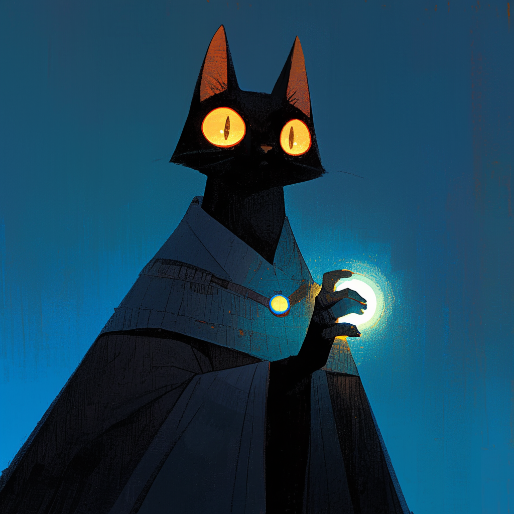
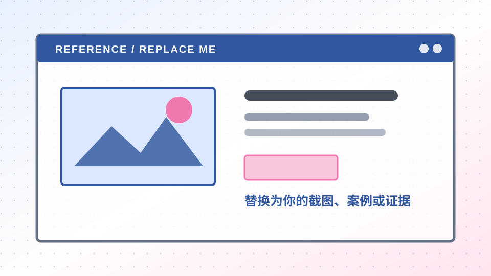

01 / 先定义你的审美输入
AI 视频不是从提示词开始，而是从判断开始。
先建立风格、参考、模型与镜头的共同语言，再让工具参与生成。

@锈原 Rustfield1080 × 1440 · 小红书竖向图文模板 · 先替换内容，再决定是否加入黑猫或证据图片。
01 / 先定义你的审美输入
先建立风格、参考、模型与镜头的共同语言，再让工具参与生成。

@锈原 Rustfield一个先记住的判断
真正能带走的不是一条提示词，而是你如何建立风格、内容和镜头之间的判断。
把感觉变成下一次还能使用的语言。03 / 一条可以跟上的路径
04 / 不解释整张图，只看一个证据

先看这一块：它决定画面能不能继续被复用。
设计、美学、产品、vibe coding。欢迎关注我，一起探索 AI 时代的一切可能性。
当前：01 封面